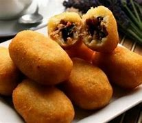
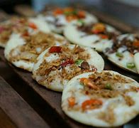

3 makanan khas jawa barat
jawa barat memiliki banyak makanan yg enak dan lezat,kali ini saya akan memberikan 3 makanan khas jawa barat
COMRO

Comro (bahasa Sunda: oncom di jero, harf. "Oncom di dalam") merupakan gorengan khas Sunda.[1]. Comro terbuat dari parutan singkong yang dibentuk bulat atau lonjong dan diisi dengan sambal oncom dan cabai lalu digoreng
KUPAT TAHU
 Kupat tahu adalah makanan tradisional Indonesia yang berbahan dasar ketupat, tahu, kol, dan tauge yang telah digoreng, dicampur dengan bumbu kacang dan kecap. Sebagai alternatif, lontong dapat juga digunakan sebagai pengganti ketupat. Ada banyak jenis kupat tahu, tetapi yang terkenal ialah yang berasal dari Singaparna, Surakarta, dan Grabag yang perbedaannya terletak pada bumbu dan pelengkap. Jika pada versi Magelang dan Solo terdapat irisan kol dan bakwan dan mi dan tahu putih seperti versi Magelang pada versi Solo, tetapi pada versi Singaparna terdapat tauge yang telah direbus.
Selain kedua variasi tadi, ada pula kupat tahu petis, perbedaannya terdapat pada bumbunya yang menggunakan Petis dan ditambah irisan timun segar. Kupat tahu dapat pula ditambah dengan kerupuk dan sambal sebagai penambah selera makan. Salahsatu kupat tahu yang terkenal ialah kupat tahu Gempol yang berada di kawasan Pasar Gempol, Bandung.
Kupat tahu adalah makanan tradisional Indonesia yang berbahan dasar ketupat, tahu, kol, dan tauge yang telah digoreng, dicampur dengan bumbu kacang dan kecap. Sebagai alternatif, lontong dapat juga digunakan sebagai pengganti ketupat. Ada banyak jenis kupat tahu, tetapi yang terkenal ialah yang berasal dari Singaparna, Surakarta, dan Grabag yang perbedaannya terletak pada bumbu dan pelengkap. Jika pada versi Magelang dan Solo terdapat irisan kol dan bakwan dan mi dan tahu putih seperti versi Magelang pada versi Solo, tetapi pada versi Singaparna terdapat tauge yang telah direbus.
Selain kedua variasi tadi, ada pula kupat tahu petis, perbedaannya terdapat pada bumbunya yang menggunakan Petis dan ditambah irisan timun segar. Kupat tahu dapat pula ditambah dengan kerupuk dan sambal sebagai penambah selera makan. Salahsatu kupat tahu yang terkenal ialah kupat tahu Gempol yang berada di kawasan Pasar Gempol, Bandung.
SURABI

Serabi merupakan jajanan pasar tradisional yang berasal dari Indonesia. Serabi berasal dari bahasa Jawa yang berinduk dasar dari kata "rabi" yang dalam bahasa Jawa berarti "kawin". Mungkin karena proses pembuatannya yang cukup sebentar dan tidak terlalu lama maka orang Jawa menyebutnya dengan kata "Serabi" (seperti waktu proses sekali kawin). Di Jawa Barat serabi dikenal dengan nama surabi atau sorabi. Di Jawa, serabi umumnya disajikan dengan isian gula atau manisan lainnya, tetapi di Tatar Sunda serabi disajikan dengan isian oncom dan asinan lainnya. Serabi biasanya dijajakan di pagi hari dan dimasak menggunakan tungku sehingga menghasilkan rasa yang khas. Kadang-kadang telur ayam yang telah dikocok ditambahkan ke atas adonan serabi yang sedang dimasak. Seiring dengan perkembangan zaman, banyak yang terus berinovasi dengan menambahkan berbagai topping seperti sosis, keju, maupun mayones yang tujuannya untuk mematahkan asumsi bahwa serabi adalah makanan yang terkesan rendahan. Tempat yang menyajikan serabi dengan berbagai variasi rasa tersebar di kota-kota besar seperti Jakarta, Bandung, dan Bogor.